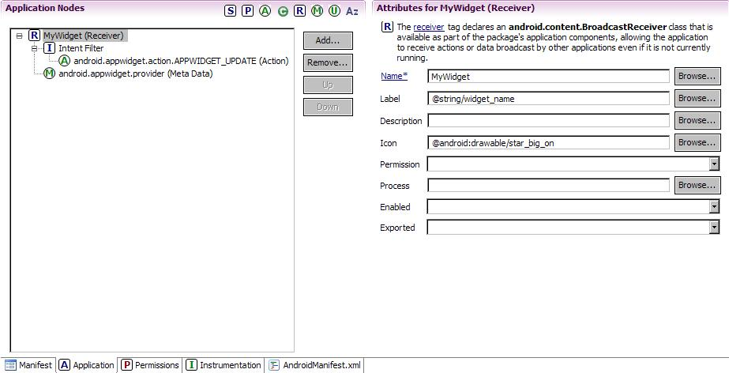
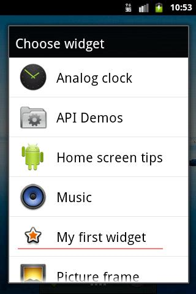
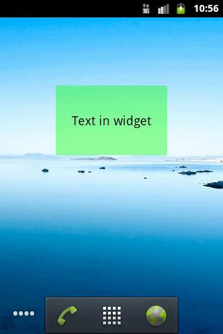
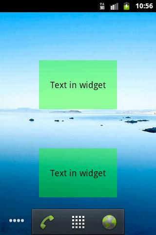
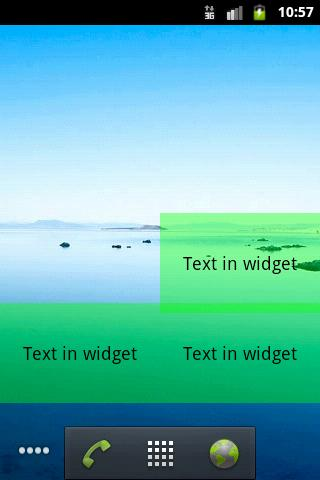
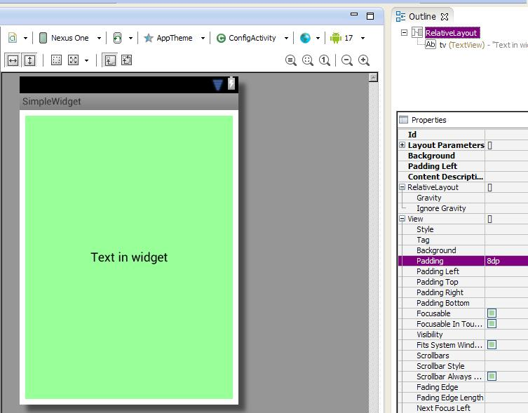
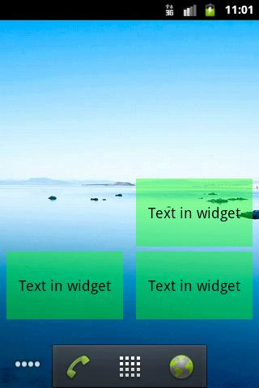

В этом уроке:
- создаем простой виджет
- разбираемся в его Lifecycle
Добрались таки и до этой долгожданной темы. Вообще, интересно было бы глянуть статистику, какое количество из всех существующих приложений содержит в себе виджеты. Подозреваю, что не чаще, чем одно из десяти. Возможно, ближайшие несколько уроков эту статистику изменят )
Для понимания темы виджетов желательно знать, что такое BroadcastReceiver. Я о нем упоминал в Уроках 96 и 100. Это просто слушатель, который регистрируется в системе, ловит с помощью настроенного Intent Filter сообщения (Intent) и выполняет какой-либо код. Почему-то не сделал я отдельного урока по нему. Но, думаю, еще сделаю. Есть там свои интересные особенности, о которых можно поговорить.
Думаю, нет особой необходимости подробно объяснять, что такое виджеты. Все их видели на своих девайсах. Это что-то типа мини-приложений расположенных на рабочем столе (Home). Они позволяют просмотреть какую-либо информацию из основных приложений, либо повлиять на поведение этих приложений. В качестве примера можно привести – прогноз погоды, текущее время, баланс какого-либо счета, список сообщений в различных мессенджерах, управление состоянием WiFi/3G/GPS/Bluetooth, яркость экрана и т.д. и т.п. В этом уроке сделаем простейший виджет, который отобразит статичный текст.
Чтобы создать простейший виджет нам понадобятся три детали:
1) Layout-файл.
В нем мы формируем внешний вид виджета. Все аналогично layout-файлам для Activity и фрагментов, только набор доступных компонентов здесь ограничен следующим списком:
FrameLayout
LinearLayout
RelativeLayout
GridLayout
AnalogClock
Button
Chronometer
ImageButton
ImageView
ProgressBar
TextView
ViewFlipper
ListView
GridView
StackView
AdapterViewFlipper
2) XML-файл c метаданными
В нем задаются различные характеристики виджета. Мы пока что укажем следующие параметры:
- layout-файл (из п.1.), чтобы виджет знал, как он будет выглядеть
- размер виджета, чтобы виджет знал, сколько места он должен занять на экране
- интервал обновления, чтобы система знала, как часто ей надо будет обновлять виджет
3) Класс, наследующий AppWidgetProvider. В этом классе нам надо будет реализовать Lifecycle методы виджета.
Давайте создадим три этих детали. Activity нам не понадобится, поэтому не забудьте убрать галку Create Activity в Wizard создания нового проекта
Создадим проект без Activity:
Project name: P1171_SimpleWidget
Build Target: Android 4.0
Application name: SimpleWidget
Package name: ru.startandroid.develop.p1171simplewidget
Добавим строки в strings.xml:
<string name="widget_name">My first widget</string>
<string name="widget_text">Text in widget</string>
Создаем layout-файл widget.xml:
<?xml version="1.0" encoding="utf-8"?>
<RelativeLayout
xmlns:android="http://schemas.android.com/apk/res/android"
android:layout_width="match_parent"
android:layout_height="match_parent"
android:orientation="vertical">
<TextView
android:id="@+id/tv"
android:layout_width="match_parent"
android:layout_height="match_parent"
android:background="#6600ff00"
android:gravity="center"
android:text="@string/widget_text"
android:textColor="#000"
android:textSize="18sp">
</TextView>
</RelativeLayout>RelativeLayout, а внутри зеленый TextView с текстом по центру. Т.е. виджет просто будет показывать текст на зеленом фоне.
Создаем файл метаданных res/xml/widget_metadata.xml:
<appwidget-provider
xmlns:android="http://schemas.android.com/apk/res/android"
android:initialLayout="@layout/widget"
android:minHeight="40dp"
android:minWidth="110dp"
android:updatePeriodMillis="2400000">
</appwidget-provider>В атрибуте initialLayout указываем layout-файл для виджета.
Атрибуты minHeight и minWidth содержат минимальные размеры виджета по высоте и ширине.
Есть определенный алгоритм расчета этих цифр. Как вы наверняка замечали, при размещении виджета, экран делится на ячейки, и виджет занимает одну или несколько из этих ячеек по ширине и высоте. Чтобы конвертнуть ячейки в dp, используется формула 70 * n – 30, где n – это количество ячеек. Т.е. если мы, например, хотим, чтобы наш виджет занимал 2 ячейки в ширину и 1 в высоту, мы высчитываем ширину = 70 * 2 – 30 = 110 и высоту = 70 * 1 – 30 = 40. Эти полученные значения и будем использовать в атрибутах minWidth и minHeight.
Атрибут updatePeriodMillis содержит количество миллисекунд. Это интервал обновления виджета. Насколько я понял документацию, указать мы тут можем хоть 5 секунд, но чаще, чем раз в 30 минут (1 800 000) виджет обновляться все равно не будет - это системное ограничение. Давайте пока что поставим интервал 40 минут (2 400 000). В следующих уроках мы разберемся, как самим обновлять виджет с необходимым интервалом.
Осталось создать класс, наследующий AppWidgetProvider.
package ru.startandroid.develop.p1171simplewidget;
import java.util.Arrays;
import android.appwidget.AppWidgetManager;
import android.appwidget.AppWidgetProvider;
import android.content.Context;
import android.util.Log;
public class MyWidget extends AppWidgetProvider {
final String LOG_TAG = "myLogs";
@Override
public void onEnabled(Context context) {
super.onEnabled(context);
Log.d(LOG_TAG, "onEnabled");
}
@Override
public void onUpdate(Context context, AppWidgetManager appWidgetManager,
int[] appWidgetIds) {
super.onUpdate(context, appWidgetManager, appWidgetIds);
Log.d(LOG_TAG, "onUpdate " + Arrays.toString(appWidgetIds));
}
@Override
public void onDeleted(Context context, int[] appWidgetIds) {
super.onDeleted(context, appWidgetIds);
Log.d(LOG_TAG, "onDeleted " + Arrays.toString(appWidgetIds));
}
@Override
public void onDisabled(Context context) {
super.onDisabled(context);
Log.d(LOG_TAG, "onDisabled");
}
}onEnabled вызывается системой при создании первого экземпляра виджета (мы ведь можем добавить в Home несколько экземпляров одного и того же виджета).
onUpdate вызывается при обновлении виджета. На вход, кроме контекста, метод получает объект AppWidgetManager и список ID экземпляров виджетов, которые обновляются. Именно этот метод обычно содержит код, который обновляет содержимое виджета. Для этого нам нужен будет AppWidgetManager, который мы получаем на вход.
onDeleted вызывается при удалении каждого экземпляра виджета. На вход, кроме контекста, метод получает список ID экземпляров виджетов, которые удаляются.
onDisabled вызывается при удалении последнего экземпляра виджета.
Во всех методах выводим в лог одноименный текст и список ID для onUpdate и onDeleted.
Повторюсь - в onUpdate мы, по идее, должны написать какое-то обновление виджета. Т.е. если наш виджет отображает, например, текущее время, то при очередном обновлении (вызове onUpdate) надо получать текущее время и передавать эту инфу в виджет для отображения. В этом уроке мы пока не будем с этим возиться.
Осталось немного подрисовать манифест. Добавьте туда ваш класс как Receiver

- укажите для него свои label и icon. Этот текст и эту иконку вы увидите в списке выбираемых виджетов, когда будете добавлять виджет на экран.
- настройте для него фильтр с action = android.appwidget.action.APPWIDGET_UPDATE
- добавьте метаданные с именем android.appwidget.provider и указанием файла метаданных xml/widget_metadata.xml в качестве ресурса
После этого секция receiver в манифесте должна получиться примерно такая:
<receiver
android:name="MyWidget"
android:icon="@android:drawable/star_big_on"
android:label="@string/widget_name">
<intent-filter>
<action
android:name="android.appwidget.action.APPWIDGET_UPDATE">
</action>
</intent-filter>
<meta-data
android:name="android.appwidget.provider"
android:resource="@xml/widget_metadata">
</meta-data>
</receiver>
Виджет готов. Все сохраняем и запускаем. Никаких Activity, разумеется, не всплывет. В консоли должен появиться текст:
\P1171_SimpleWidget\bin\P1171_SimpleWidget.apk installed on device
Done!
Открываем диалог создания виджета и видим в списке наш виджет с иконкой и текстом, которые мы указывали в манифесте для receiver.

Выбираем его и добавляем на экран.

Виджет появился, смотрим логи.
onEnabled
onUpdate [8]
Сработал onEnabled, т.к. мы добавили первый экземпляр виджета. И сразу после добавления, сработал метод onUpdate для этого экземпляра. Видим, что ему назначен ID = 8. (У вас, скорее всего, будет другой ID). Т.е. система добавила экземпляр виджета на экран и вызвала метод обновления с указанием ID экземпляра.
Добавим еще один экземпляр

Смотрим лог
onUpdate [9]
onEnabled не сработал, т.к. добавляемый экземпляр виджета уже не первый. onUpdate же снова отработал для нового добавленного экземпляра и получил на вход ID = 9.
Теперь давайте удалим с экрана два этих экземпляра виджета. Сначала второй. В логах увидим:
onDeleted [9]
Сработал onDeleted и получил на вход ID удаляемого экземпляра виджета.
Удаляем первый экземпляр. В логах:
onDeleted [8]
onDisabled
Снова сработал onDeleted - нас оповестили, что экземпляр виджета с ID=8 был удален. И сработал onDisabled, т.е. был удален последний экземпляр виджета, больше работающих экземпляров не осталось.
Наш виджет обновляется (получает вызов метода onUpdate) раз в 40 минут. Если кому не лень, добавьте снова пару виджетов на экран и подождите. Когда они снова обновятся, в логах это отразится.
Так создается и работает простой виджет. Пока остановимся на этом, чтобы уложились в голове схема создания виджета и его lifecycle-методы. Из интересного хотелось бы еще отметить пару вещей.
BroadcastReceiver
Класс AppWidgetProvider является расширением класса BroadcastReceiver (в манифесте мы его и прописали как Receiver). Он просто получает от системы сообщение в onReceive, определяет по значениям из Intent, какое именно событие произошло (добавление, удаление или обновление виджета), и вызывает соответствующий метод (onEnabled, onUpdate и пр.).
В манифесте мы для нашего Receiver-класса настроили фильтр с action, который ловит события update. Каким же образом этот Receiver ловит остальные события (например, удаление)? Документация пишет об этом так:
The <intent-filter> element must include an <action> element with the android:name attribute. This attribute specifies that the AppWidgetProvider accepts the ACTION_APPWIDGET_UPDATE broadcast. This is the only broadcast that you must explicitly declare. The AppWidgetManager automatically sends all other App Widget broadcasts to the AppWidgetProvider as necessary.
Т.е. ACTION_APPWIDGET_UPDATE – это единственный action, который необходимо прописать явно. Остальные события AppWidgetManager каким-то образом сам доставит до нашего AppWidgetProvider-наследника.
Отступы
Если мы расположим рядом несколько экземпляров виджета, увидим следующую картину

Не очень приятное зрелище. Надо бы сделать отступ.
Добавим android:padding="8dp" к RelativeLayout в нашем layout-файле

Сохраняем, запускаем.
Виджеты на экране поменялись автоматически и теперь выглядят более пристойно.

Кстати, для них сработал onUpdate, смотрите логи. В метод был передан массив ID всех работающих экземпляров виджета.
В Android 4.0 (API Level 14) и выше этот недостаток с отступами был устранен, и вручную делать отступы больше не надо. Давайте проверим. Уберите ранее добавленный в RelativeLayout отступ. И укажите в манифесте android:targetSdkVersion версию 14 (или выше), чтобы система знала, что можно использовать стандартные возможности, а не режим совместимости.
Все сохраняем, запускаем наш виджет на эмуляторе с 4.1. Добавим три экземпляра.

Система сама делает отступы между виджетами.
Получается для версий, ниже 4 надо делать отступ в layout, а для старших версий не надо. Документация дает подсказку, как сделать так, чтобы ваш виджет корректно работал на всех версиях. Для этого используются квалификаторы версий.
В layout для RelativeLayuot указываете:
android:padding="@dimen/widget_margin"
И создаете два файла.
res/values/dimens.xml с записью:
<dimen name="widget_margin">8dp</dimen>
и res/values-v14/dimens.xml с записью:
<dimen name="widget_margin">0dp</dimen>
В манифесте android:targetSdkVersion должен быть 14 или выше.
Таким образом, на старых версиях (без системного отступа) отступ будет 8dp, а на новых – 0dp и останется только системный отступ.